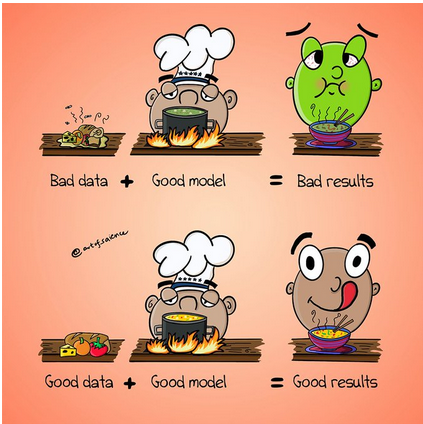
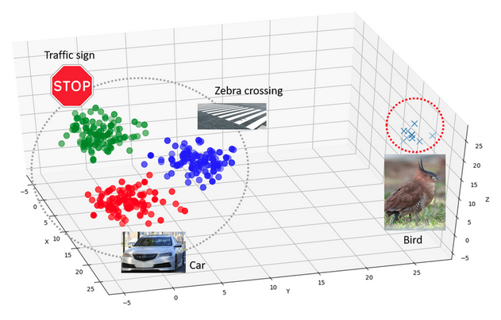

The Ethics of machine learning learning
Last updated on 2026-04-13 | Edit this page
Overview
Questions
- What is machine learning and what benefits does it present?
- How do I select an appropriate model for my data?
- What are the difference between supervised and unsupervised models?
- What are difference between traditional and deep learning machine learning?
Objectives
- Understand the background of machine learning and what it does.
- To understand the aspects of your data to refine your model selection.
- To understand the difference between supervised and unsupervised models.
- To know the differences between traditional and deep learning models.
- To understand the positives and negatives to different model approaches.
Introduction
Machine learning comprises a variety of tools and methodologies designed to uncover patterns within datasets. This lesson aims to introduce a selection of these techniques, although there exist numerous others beyond the scope of this session. These techniques can be broadly categorised into two main groups: predictors and classifiers. Predictors are employed to forecast a value or a set of values based on a given set of inputs. For instance, they may predict the cost of an item considering economic conditions and the price of raw materials or forecast a country’s GDP based on its life expectancy. On the other hand, classifiers are tasked with categorised data into distinct groups. For example, they might discern visible characters within an image of written text or determine whether a message is spam or legitimate.
General overview
Many machine learning systems, although not all, acquire knowledge by processing a sequence of input and output data, which they then utilize to construct a model. The mathematical underpinnings of machine learning are agnostic to the nature of the data, based upon whether it can be represented numerically or categorized. Examples of such applications include:
- Estimating an individual’s weight based on their height.
- Predicting commute duration given prevailing traffic conditions.
- Forecasting housing prices based on stock market fluctuations.
- Distinguishing between spam and legitimate emails.
- Identifying whether an image contains a person or not.
Typically, these models require extensive training with hundreds, thousands, or even millions of examples before they achieve sufficient accuracy for practical predictions or classifications. Some systems undertake training as a one-time process, resulting in the creation of a model. Others may continuously refine their training through real-world system usage and human feedback known as reinforcement learning. For instance, every time a user labels an email as spam or not spam, they likely contribute to further training of the spam filter’s model.
Types of output
Predictors will usually involve a continuous scale of outputs, such as the price of something or as classifiers which will tell you which class (or classes) are present in the data. For example, a system to recognize handwriting numbers from an input image will need to classify the output into one of a set of potential characters e.g. 1 to 9.
Machine learning vs Artificial Intelligence
Artificial Intelligence encompasses systems with generalized intelligence, theoretically capable of solving a wide array of problems. However, AI is a broad term with varying interpretations. Machine learning systems, on the other hand, are typically trained to address specific problems. While they may exhibit learning behaviour, they lack the generalized intelligence to solve any problem a human could tackle. This usually means that a Machine Learning model trained on one domain isn’t applicable to another without any additional training. Additionally, these systems often require hundreds or thousands of examples to learn and are limited to relatively straightforward classifications. In contrast, a human-like system could learn from a single example. Another definition of Artificial Intelligence traces back to the 1950s and Alan Turing’s “Imitation Game.” According to this concept, a system could be deemed intelligent if it could deceive a human into believing they were interacting with another human when in fact, they were conversing with a computer. Modern endeavours in this realm are approaching the point of successfully fooling humans, yet achieving a machine with full human-like intelligence remains a distant prospect.
Some examples of Machine learning used within our daily lives include:
- Image Recognition
- Object Detection
- Character Recognition
- Insurance Premiums
- Energy usage
- Example of machine learning in research
- Detecting water leaks in pipes.
- Cancer detection.
- Improving farming productivity.
Reflecting on the real world.
Q: What items/products that are called AI but after that definition would you now consider to be machine learning?
A: As we are yet to achieve general intelligence anything shown for example on TV is actually just machine learning!!! e.g. the new smart feature that are being incorperated into phones.
Limitations of Machine Learning
There is a common statement used in computer science, that defines the effectiveness of machine learning methods.
Garbage In = Garbage Out !!!
This slogan highlights the principle that if the input data provided is of poor quality or irrelevant, the resulting output will likely be similarly flawed. For example, if we attempt to train a machine learning system to establish a correlation between two variables that are fundamentally unrelated, the model may still generate a semblance of a connection, but the output will lack meaningful significance. This is often apparent when the model’s output appears erratic or seemingly random.

.Bias or lacking training data
The input data may also lack sufficient diversity to encompass all potential scenarios. Biases present in the data collection process can subsequently manifest in the machine learning system. For instance, if data on crime reporting is gathered, it may skew towards wealthier areas where incidents are more likely to be reported. Historical data might be inadequate in terms of coverage or relevance to the specific context being analysed. For example, imagine creating a model to transcribe written text from historical documents. If the model is trained solely on documents from the 1950s to 2000, it may perform well when tested on similar samples from that era. However, testing the model on pre-1950s material might yield poor results because handwriting styles and language usage evolve over time.

.Effect of outter-distrabution testing.
Q: What do think would happen if say we trained a model on one type of medical scan, say mammography (X-ray) and then tested our model using ultrasound.
A: As our model doesnt know how to detect features in ultrasound the results would be random and unpredictable.
Extrapolation
We can only confidently forecast outcomes for data that falls within the range of our training data. When attempting to extrapolate beyond the scope of our training data, it’s likely that our predictions will be inaccurate. An easy way to see this is to plot your training data based on it features along with the sample you want to analyse. If the sample is nowhere near your data, then you could consider this sample an outlier.
Over fitting
Sometimes ML algorithms become over trained to their training data and struggle to work when presented with real data. Meaning that the model has focused too much on certain characteristics that determine said task, but these may not be applicable when it is used to predict on the test set. This again results in some random predictions. Therefore, its critical not to over train (train for too long) your model.
Overfiting question.
Q: What do you think happens to the results of the test set if you training your model for too long and it becomes over fitted.
A: Typically the model will perform badly on the testing data, as over fitting describes a model paying to much attention to attributes/characteristics specific to the training data.
Inability to explain answers
Many machine learning techniques will give us an answer given some input data even if that answer is wrong. Most are unable to explain any kind of logic in arriving at that answer. This can make diagnosing and even detecting problems with them difficult.
 .
.
(cite: https://www.sciencedirect.com/science/article/abs/pii/S1389041723001225)
The issues with the lack of explainablity
Q: Say you have created a model that achieves 95% accuracy in classification on a given task. Then you go to and expert and show them the model, what do you think the first thing they are going to ask? What fields do you think this lack of explainablity is a massive issue?
A: Any medical field it becomes a massive issue, especially because patents lives could be drectly effected.
Ethics and Machine Learning
There are increasing worries about the ethics of using machine learning. In recent year’s we’ve seen several worrying problems from machine learning entering all kinds of aspects of daily life and the economy:
- The first death from an autonomous car which failed to brake for a pedestrian.[1]
- Highly targeted advertising based around social media and internet usage. [2]
- The outcomes of elections and referendums being influenced by highly targeted social media posts. This is compounded by the data being obtained without the users’ consent. [3]
- The mass deployment of facial recognition technologies. [4]
- The possible first use of autonomous military robots planning to kill in battle. [5]
Problems with bias
Machine learning systems are often presented as more impartial and consistent ways to make decisions. For example, sentencing criminals or deciding if somebody should be granted bail. There have been several examples recently where machine learning systems have been shown to be biased because the data they were trained on was already biased. This can occur due to the training data being unrepresentative and under representing certain groups. For example, if you were trying to automatically screen job candidates and used a sample of people the same company had previously decided to employ then any biases in their past employment processes would be reflected in the machine learning.
Problems with explaining decisions
Many machine learning systems (e.g. neural networks) can’t really explain their decisions. Although the input and output are known trying to explain why the training caused the network to behave in a certain way can be very difficult. If a decision is questioned by a human, it’s difficult to provide any rationale as to how a decision was arrived at.
Problems with accuracy
No machine learning system is ever 100% accurate. Getting into the high 90s is usually considered good. But when we’re evaluating millions of data items this can translate into 100s of thousands of mis-identifications. If the implications of these incorrect decisions are serious then it will cause major problems. For instance if it results in somebody being imprisoned or even investigated for a crime or maybe just being denied insurance or a credit card.
Energy Usage
Many machine learning systems (especially deep learning) need vast amounts of computational power which in turn can consume vast amounts of energy. Depending on the source of that energy this might account for significant amounts of fossil fuels being burned. It is not uncommon for a modern GPU accelerated computer to use several kilowatts of power, running this for one hour could easily use as much energy a typical home would use in an entire day. This can be particularly bad when models are constantly being retrained or when “parameter sweeps” are done to find the best set of parameters to train with.
Ethics of machine learning in research
- Not all research using machine learning will have major ethical implications. Many research projects don’t directly affect the lives of other people, but this isn’t always the case.
- Some questions you might want to ask yourself (and which an ethics committee might also ask you):
- Will anything your machine learning system does decide that somehow affects a person’s life?
- Will anything your machine learning system does decide that somehow affects an animal’s life?
- Will you be using any people to create your training data? Will they have to look at any disturbing or traumatic material during the training process?
- Are there any inherent biases in the dataset(s) you’re using for training?
- How much energy will this computation use? Are there more efficient ways to get the same answer?
Something to think about.
Q: In groups discuss who you think is responsible if a AI/ML learning model goes wrong?
A: There is no correct answer, this is a heavily debated topic.